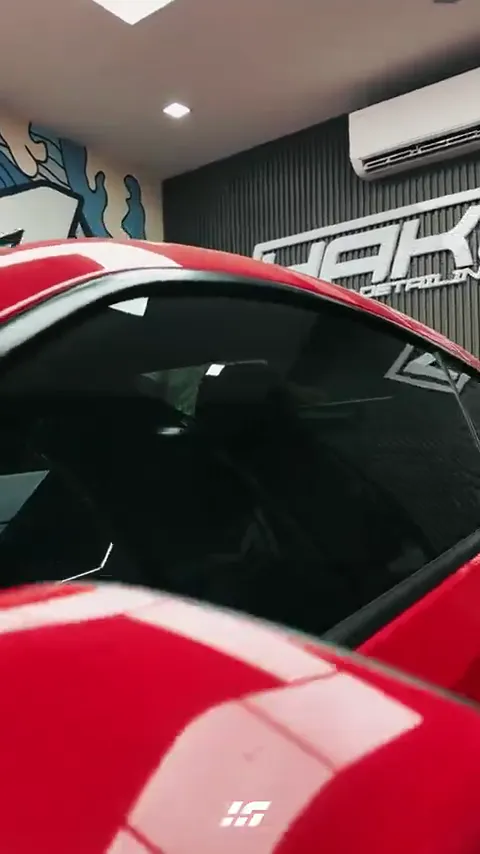

Choose the feel
of your next drive.
Explore the original tint finder and four complete redesigns. Every option includes the guided finder, film recommendations, reference pricing and a demo booking flow.
Approval preview only · No bookings are sent.The current Hakum experience.
The tint finder integrated into the existing website branding and service page.
Review the original ↗Your drive.
Your tint.

Studio
Bright editorial composition with bold type and real installation photography.
Explore design B ↗Own the night.
Keep your clarity.
Night Drive
Immersive dark design, cinematic photography and a guided consultation.
Explore design C ↗BUILT FOR
YOUR DRIVE.
Pit Lane
Motorsport energy, cobalt panels and precise film comparisons.
Explore design D ↗Comfort,
considered.
Quiet Precision
Calm typography, generous space and a refined consultation experience.
Explore design E ↗Try the complete journey.
Open a direction, answer the four questions, compare the film specifications and select an option to preview the booking form. Use the design switcher to move between directions.
Catalog and reference prices follow the developer handover. Styling is for approval; the booking flow is a demonstration.